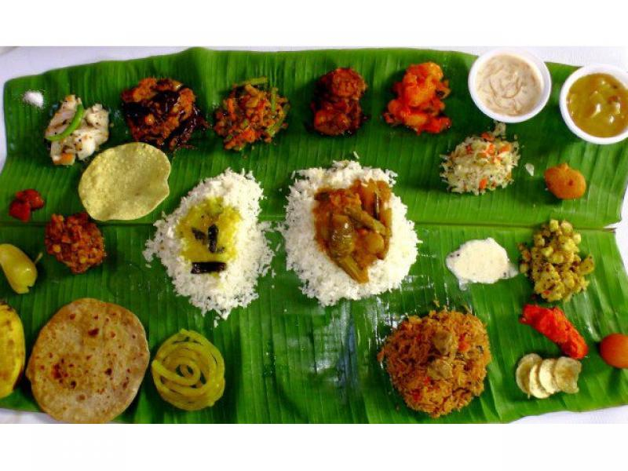
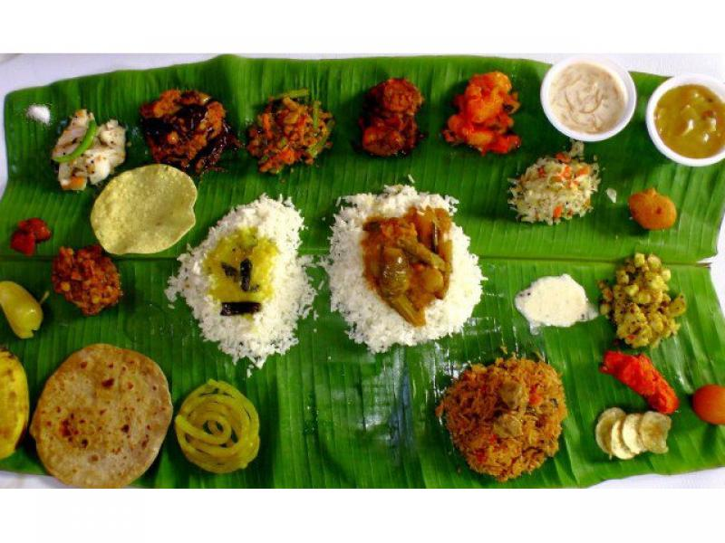
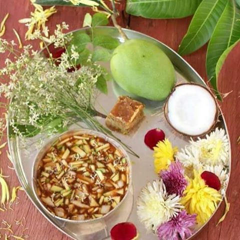

Andhra Pradesh
- Home
- Food
 

- Fashion
- Festival
- Pongal
- Ugadi Festival

Ugadi Festival
The Ugadi Festival in Andhra Pradesh is the New Year festival that is celebrated every year as Ugadi marks the beginning of the Hindi Lunar calendar. Ugadi marks a day of joy and happiness, aspirations and hope, the belief are that this day and its joys would foreshadow the course of events for the upcoming year.

Pongal
One of the most significant festivals of South India, Pongal is celebrated every year to mark the beginning of Uttarayana, that is the movement of the sun towards north and to mark the time for harvest. It is a four day long festival celebrated with a lot of vigor and merry making in almost every household. It is often called the ‘Harvest Festival’ and is celebrated to commemorate the beginning of harvesting crops in the fields. Initially a festival of the farmers, now, Pongal is celebrated all over south India. The meaning of the word Pongal is ‘Boiling Over’, as it celebrates the abundant crops in the field. Pongal marks the biggest festival in the calendar of the fairs and festivals in Andhra Pradesh. - Ugadi Festival
- Pongal